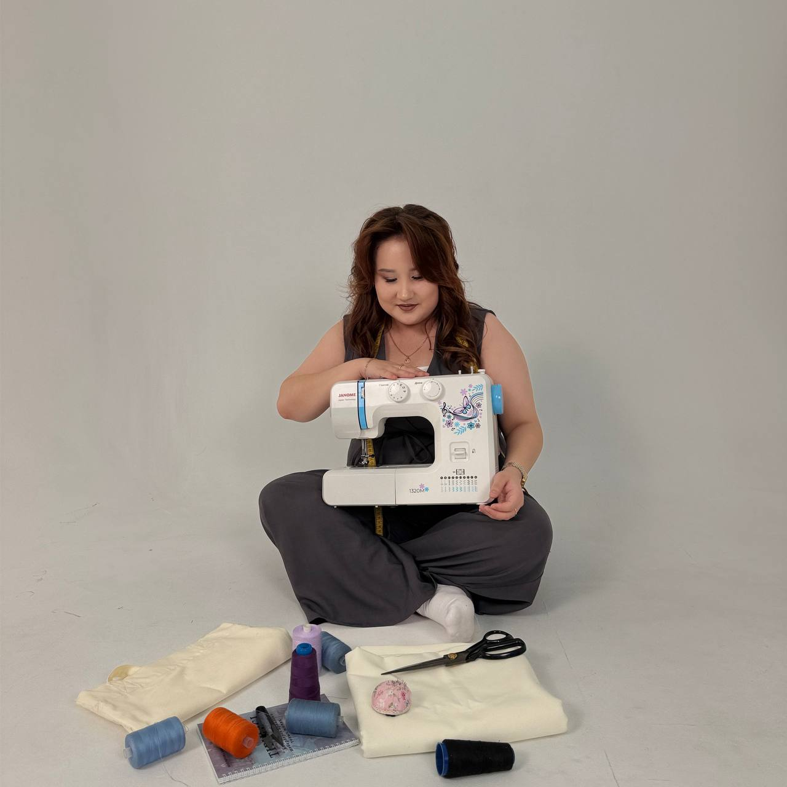

Строим выкройку с нуля — по вашей фигуре
Групповой курс «Тігу және модельдеу»: от снятия мерок до готового изделия. Без готовых лекал — учимся строить выкройку самостоятельно.

Как проходят занятия
Каждая ученица строит выкройку по собственным меркам — сначала на бумаге, затем на ткани. Никаких готовых лекал «на глаз»: только расчёт и примерка.
Курс есть в двух форматах: офлайн — в мастерской в Алматы, и онлайн — видеоуроки в своём темпе.
От основ шитья до конструирования и моделирования одежды — очно, в мастерской в Алматы. Курс подходит и тем, кто начинает с нуля, и тем, кто уже умеет шить и хочет глубже разобраться в конструировании.
«Тігу және модельдеу» — офлайн-курс
Очные занятия в мастерской в Алматы — маленькая группа, разбор на месте, примерка на каждом этапе.
Модуль 1. Основы шитья
Начинаем с базовых навыков, которые необходимы для самостоятельной работы.
Швейная машина и оверлок
Знакомство со швейной машиной и оверлоком, настройка и подготовка оборудования к работе, правильная заправка, особенности работы на машине и оверлоке.
Иглы, нитки и фурнитура
Виды игл и их назначение, виды ниток, виды молний и особенности их применения, швейная фурнитура, выбор оборудования и инструментов для работы.
Основные виды швов — практика
Ровная строчка, расечки, закрепка, обработка срезов, французский шов, московский шов, роликовый шов, кант, обработка косой бейкой.
Раскрой ткани
Долевая, поперечная и косая нить, правила раскладки и раскроя ткани.
Модуль 2. Юбка: конструирование и моделирование55 000 ₸
Начинаем работать с индивидуальными мерками и конструкцией изделия. Каждая ученица выбирает фасон юбки и проходит весь процесс от конструкции до готового изделия.
Мерки и конструкция
Снятие мерок, построение конструкции юбки по своим меркам, раскрой и самостоятельный пошив выбранного фасона.
Моделирование юбок
Ярусная юбка, юбка на запах, юбка годе, юбка-трапеция, юбка-солнце, юбка-полусолнце, юбка с драпировкой, юбка-карандаш, классическая юбка, юбка по косой.
Домашняя практика. В течение модуля вы самостоятельно выполняете построение конструкций, закрепляя полученные знания на практике.
Модуль 3. Брюки: конструирование и моделирование65 000 ₸
Переходим к конструированию поясных изделий. Вы выбираете фасон и проходите полный процесс от конструкции до готового изделия.
Мерки и конструкция
Снятие мерок для брюк, построение конструкции по своим меркам, раскрой и самостоятельный пошив выбранного фасона.
Моделирование брюк
Кюлоты, брюки палаццо, брюки клёш, брюки-бананы, классические брюки.
Домашняя практика. В процессе модуля закрепляем построение конструкций через самостоятельные домашние задания.
Модуль 4. Плечевые изделия и рукава75 000 ₸
Самый объёмный блок курса, посвящённый плечевым изделиям, конструкции и моделированию. Каждая ученица выбирает изделие — рубашку или платье, фасон на выбор.
Мерки, конструкция и рукав
Снятие мерок для плечевого изделия, построение конструкции по индивидуальным меркам, построение основы рукава и работа с различными вариантами рукавов.
Моделирование плечевых изделий
Платье-трапеция, платье на запах, платье с драпировкой, рубашка, футболка с опущенным рукавом, оверсайз, свитшот с рукавом реглан, платье с рельефами, варианты моделирования рукавов.
Домашняя практика. Самостоятельное построение конструкций в каждом модуле, чтобы знания переходили из теории в навык.
Модуль 5. Трикотаж
Завершающий практический модуль — работа с трикотажными тканями и готовыми выкройками.
Практика
Пошив трикотажного изделия по готовой выкройке. Особенности раскроя и пошива трикотажа, работа с готовыми выкройками и обработка трикотажных изделий.
Работа с тканями
Разберём, какую ткань лучше выбрать для конкретного фасона и как её свойства влияют на посадку и обработку изделия.
Фурнитура и детали
Потайная молния, гульфик, разные виды поясов, карманы и другие конструктивные и технологические детали.
Индивидуальный подход
При выборе фасона учитываем особенности изделия, ткани и желаемого результата — вы учитесь понимать конструкцию и адаптировать её под модель.
Итог курса: снять мерки → построить конструкцию → смоделировать → подобрать ткань и фурнитуру → раскроить → обработать детали → сшить готовое изделие — и применять этот алгоритм к разным моделям одежды.
Тот же курс в формате видеоуроков — смотрите в своём темпе, доступ в личном кабинете после регистрации.
«Тігу және модельдеу» — полный курс
Групповой курс: строим выкройку с нуля по вашим меркам и шьём изделие — от расчёта до готовой вещи на себе.
Можно купить отдельным модулем
Нужна не вся программа, а конкретная тема — юбки, брюки или платья? Каждый модуль курса продаётся отдельно, по своей цене.
Оборудование и основы шитья
Швейная машина, оверлок, виды швов и обработка срезов — база перед раскроем и пошивом.
Юбки: конструирование и моделирование
От юбки-трапеции и полусолнца до карандаша и годе — построение и 10 вариантов моделирования.
Брюки: конструирование и пошив
Базовая конструкция, брюки палаццо и джинсы с карманами и молнией, 4 фасона на моделирование.
Плечевые изделия: платья и рубашки
Платье-трапеция с рельефами, рубашка с кокеткой и построение рукава — самый объёмный модуль курса.
Нужен не курс, а пошив одного изделия? Смотрите «Ателье» — индивидуальный пошив и реставрация.
Перейти в АтельеГотовы начать? Напишите нам
Расскажем о ближайшей дате старта офлайн-группы, стоимости офлайн- и онлайн-курса — в WhatsApp.